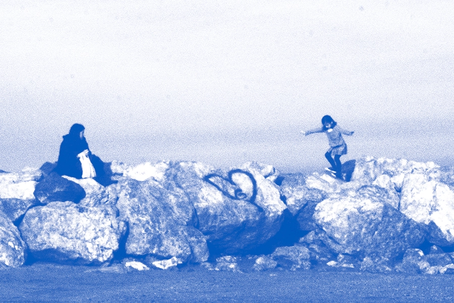
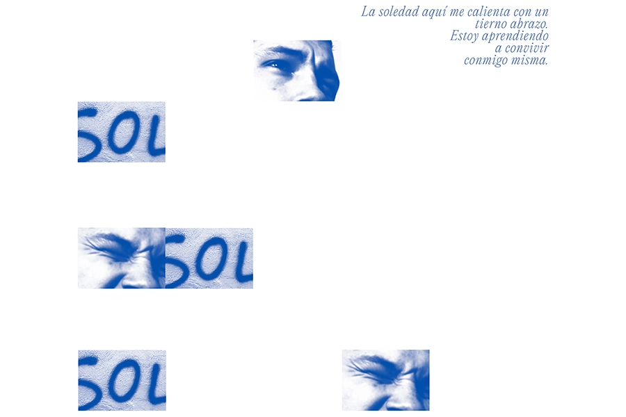
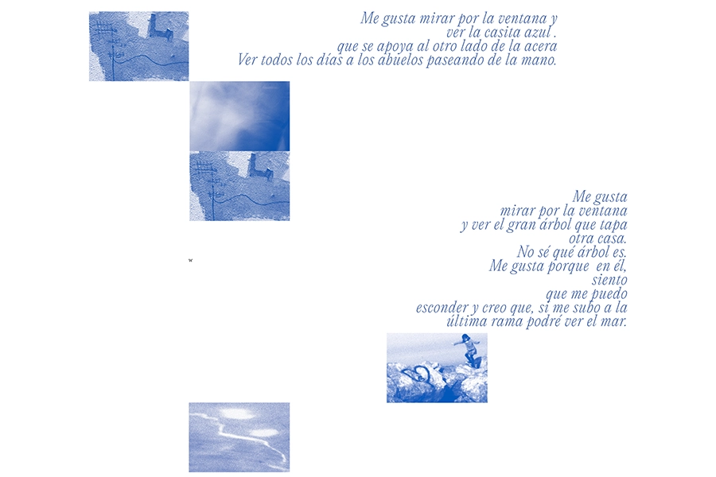
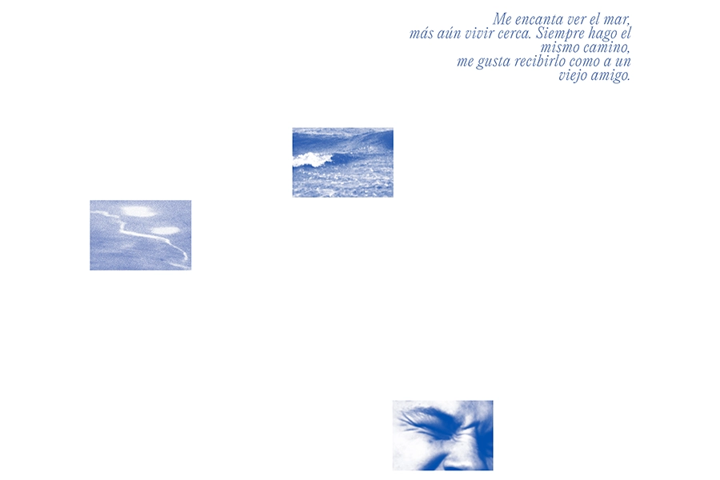

Un paseoUn paseo

Un paseo

Un paseo

Un paseo
2024
Sin principio ni fin, “Un paseo” habla del camino que la autora
siempre sigue para llegar a la playa. Tras mudarse, ese camino se
convirtió en el único trasto de familiaridad. A partir de una serie de
fotografías se conforman composiciones que ilustran los recortes de su
diario. La búsqueda de intimidad y conocimiento del entorno se vuelven
el eje de una historia.